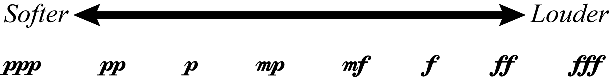
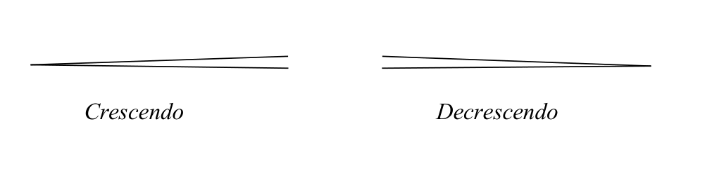
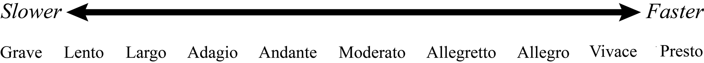
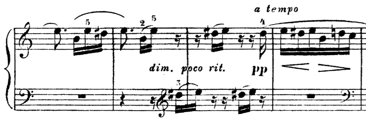
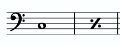
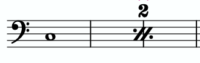
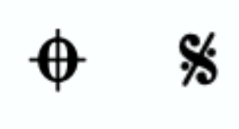
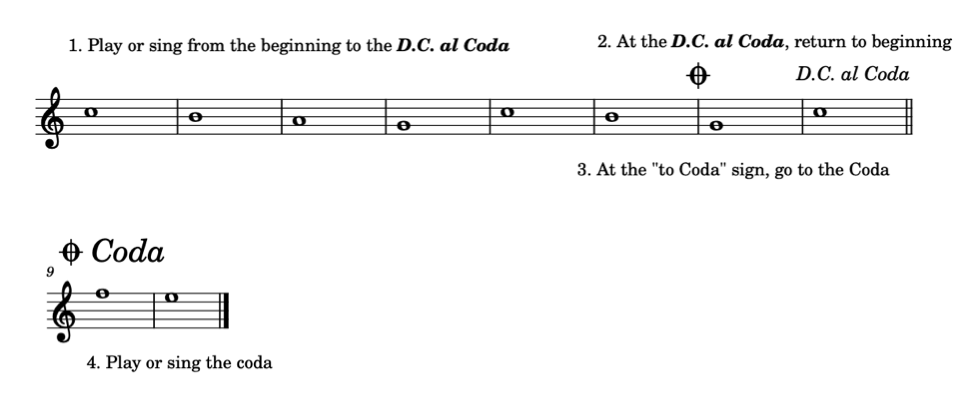
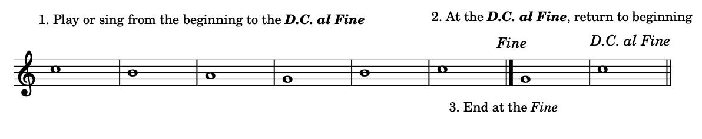
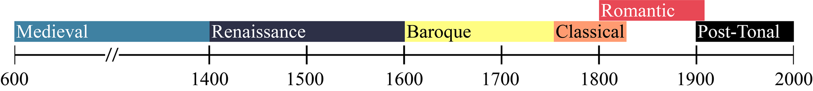

Open Music Theory：繁體中文版
其他記譜要素
重點整理
- 力度表示音樂的強弱。西方記譜法使用多種義大利語詞彙標示力度。
- 漸強（crescendo）表示音量逐漸增加；decrescendo 與 diminuendo 都表示漸弱。
- 發音方式（articulation）指音與音之間的連接或分離，以及一個音開始時，也就是起音時的強調程度。
- 速度標記告訴音樂家，演奏或演唱作品時應有多快或多慢。
- 音樂家會將音樂歷史劃分為不同時期，記住這些時期很有幫助；同一時期的作品往往具有相近的風格特徵。
- 結構要素把作品或樂章劃分為較小的段落。
本章探討音高與時值以外的其他音樂要素。音高已於前面各章討論，時值則會在後續章節介紹。本章包括力度、發音方式、速度、風格時期及結構標記。
查看英文原文
Key Takeaways
- Dynamics indicate the loudness of music. Musicians use a variety of Italian words to specify dynamics in Western musical notation.
- A crescendo indicates an increase in loudness, while a decrescendo or diminuendo indicates a decrease in loudness.
- The term articulation refers to the connection or separation between notes, as well as the accent level at the beginning of a note (its attack).
- A tempo indication tells a musician how fast or slow to play or sing a composition.
- Musicians periodize music into historical eras, which are useful to memorize. Works within these historical periods tend to share similar style characteristics.
- Structural features divide up a work or movement into smaller sections.
In this chapter we will explore other elements of music besides pitch (discussed in previous chapters) and duration (discussed in following chapters). These elements include dynamics, articulations, tempi, stylistic periods, and structural markers.
數種義大利語詞彙與字尾可修飾 piano 和 forte，形成從非常弱到非常強的一系列力度，如例 1。mezzo 意為「中等程度」，因此 mezzo forte 是中強，mezzo piano 是中弱。義大利語字尾 -issimo 意為「很」或「非常」；pianissimo 是很弱，fortissimo 是很強。這個字尾還能繼續疊加，例如 pianississimo 表示非常非常弱，fortississimo 表示非常非常強。
{kind=link}

- Softer：更弱；
- Louder：更強。
西方記譜法經常以縮寫標示力度，如下：
- fff = fortississimo：非常非常強。
- ff = fortissimo：很強。
- f = forte：強。
- mf = mezzo forte：中強。
- mp = mezzo piano：中弱。
- p = piano：弱。
- pp = pianissimo：很弱。
- ppp = pianississimo：非常非常弱。
有些作曲家會疊加更多個 -issimo，但這並不常見。不過，某天你演奏或演唱的樂曲中，可能就會遇到 pppppp 或 ffffff！
你可以透過下列練習，把力度由最弱排到最強：
另有三個常用的義大利文詞彙表示力度變化：crescendo（cresc.）表示漸強，decrescendo（decresc.）與 diminuendo（dim.）都表示漸弱。漸強與漸弱有兩種記法：可以寫出縮寫 cresc. 或 decresc.，有時在後面加上延續點線；也可以畫出楔形漸強漸弱記號（hairpins）。英文 hairpin 原意是髮夾，這些符號的外形與髮夾相似，如例 2。
{kind=link}

查看英文原文
Dynamics
Dynamics indicate the loudness of music. In Western musical notation, we often use italicized Italian words, which can be abbreviated, to describe dynamics. The dynamic marking forte means loud, while piano means quiet. In sheet music, these words are written either above or below the staff.
Several Italian words and suffixes can modify piano and forte to create a range of dynamics from very quiet to very loud (Example 1). The Italian word mezzo means “moderately.” Musicians say mezzo forte to mean moderately loud and mezzo piano to mean moderately quiet. The Italian suffix -issimo means “very” or “extremely.” Musicians say pianissimo to mean “very quiet” and fortissimo to mean “very loud.” This suffix can be stacked; for example, one can say pianississimo to mean “very, very quietly,” or fortississimo to mean “very, very loudly.”
Dynamics are often abbreviated in Western musical notation, as shown below.
- fff = fortississimo
- ff = fortissimo
- f = forte
- mf = mezzo forte
- mp = mezzo piano
- p = piano
- pp = pianissimo
- ppp = pianississimo
Some composers add even more “-issimo“s, but this is rare. However, you might one day spot a pppppp or an ffffff in music that you play or sing!
You can practice ordering dynamics from softest to loudest in the following exercise:
There are three other Italian words that are commonly used to indicate a change in dynamic level. Crescendo (cresc.) means to get louder, while decrescendo (decresc.) and diminuendo (dim.) both mean to get quieter. Crescendos and decrescendos are indicated two different ways: either by writing out the abbreviation cresc. or decresc., possibly followed by dots, or by drawing hairpins. The term “hairpin” refers to the following symbols, which roughly approximate the shape of a bobby pin (or “hairpin”), as seen in Example 2.
發音方式（articulation）指音與音之間的連接或分離，以及音開始時，也就是起音時的強調程度。和力度一樣，西方記譜法通常以義大利文描述發音方式。例 3–7示範其中幾種。打擊樂、撥弦樂器、弓弦樂器、木管、銅管與人聲，實現特定起音及發音方式的方法各不相同。若需要協助，請向個別指導老師或合奏指導者請教，如何在自己的樂器或歌聲上運用這些方式。
例 3：legato（圓滑奏）表示平順、連接地演奏或演唱，以弧形的圓滑線（slur）標示。
例 4：另一種表示平順、連接演奏的方式，是使用 tenuto（保持音）記號，也就是音符上方或下方的一條短線。
例 5：staccato（斷奏）表示讓各音更加分離，在音與音之間留下空隙；通常以音符上方或下方的小點標示。
例 7：marcato（強重音）記號看起來像倒 V，表示使用更有力的重音。
-
例 3。 加圓滑線的音符。
{kind=link}
-
例 4。 加保持音記號的音符。
{kind=link}
-
例 5。 加斷奏記號的音符。
{kind=link}
-
例 6。 加重音記號的音符。
{kind=link}
-
例 7。 加強重音記號的音符。
{kind=link}
重音也可以用斜體縮寫 sfz、sf 或 fz 標示，相關詞彙包括 sforzando、forzando 及 forzato。這些重音通常被理解為比一般重音更有力，也就是更響亮一點。它們的寫法類似力度記號，置於所作用音符的正上方或正下方。
查看英文原文
Articulations
The term articulation refers to the connection or separation between notes and to the accent level at the beginning of a note (its attack). Like dynamics, articulations in Western musical notation are usually written in Italian. Several articulations are demonstrated in Examples 3–7. Percussion instruments, plucked strings, bowed strings, winds, brass, and voices all have different methods of carrying out particular attacks and articulations. You will want to consult with a private teacher or ensemble director for help with applying different articulations to your instrument or voice.
Example 3: Legato means to play or sing smoothly or connected. This articulation is indicated by a curved slur marking.
Example 4: Another way to indicate smooth, connected playing is with tenuto markings, which look like a small line above or below notes.
Example 5: Staccato means to play or sing notes more separated, leaving space between notes. This articulation is usually indicated by a dot placed above or below notes.
Example 6: An accent (a sideways V) means to play or sing a note with extra stress or emphasis.
Example 7: A marcato marking (an upside-down V) means to play or sing a note with a more forceful accent.
-
Example 3. Slurred notes.
-
Example 4. Tenuto notes.
-
Example 5. Staccato notes.
-
Example 6. Accented notes.
-
Example 7. Marcato notes.
Accented notes can also be indicated by the italicized abbreviations sfz, sf, or fz (sforzando, forzando, or forzato). These accents are usually interpreted to be slightly more forceful (i.e., louder) than regular accents. These symbols work like dynamics and are placed directly above or below the note to which they apply.
速度（tempo，複數 tempi）指演出作品的快慢。通常可用節拍器標記精確指示，也可用文字作較概略的指示。節拍器標記通常以每分鐘拍數（bpm）表示。♩ = 60 代表一分鐘有 60 個四分音符，也就是每秒一個四分音符。利用手機上的免費節拍器應用程式，就能輕鬆確認所演奏或演唱作品的速度。
和力度一樣，多數速度標記以義大利文書寫，常出現在作品、樂章或段落的開頭，位於第一行五線譜或譜表系統的左上方。最常見的速度詞如下：
- 快速：vivace（活潑地）、presto（急板）、allegro（快板）、allegretto（稍快板）。-etto 是義大利語表示「小」的字尾。
- 中等速度：moderato（中板）、andante（行板）。
- 慢速：adagio（柔板）、largo（廣板）、lento（緩板）、grave（莊重地）。
例 8將速度詞由最慢至最快排列：

- Slower：更慢；
- Faster：更快。
各義大利語速度詞的中文說明見本節正文。
你可以利用下列練習，把速度詞由最慢排到最快：
作曲家有時會加上其他義大利文，尤其是帶有情感意味的用語，修飾速度標記。assai（很、相當）、espressivo（富有表情地）與 cantabile（如歌地）等詞經常出現在速度標記之後，尤其是 1800 年以後的作品。例如，你可能遇到 allegro assai（很快）、andante cantabile（中等速度、如歌地），或 adagio espressivo（緩慢而富有表情）。樂譜上有不認識的詞時，務必查明它的意思。
另有兩個常用義大利文表示速度變化：ritardando（rit.）表示漸慢，accelerando（accel.）表示漸快。兩者通常用斜體書寫，並常分別縮寫為 rit. 與 accel.。若指示延續數個小節，後方常接上點線，點線延伸多長，就表示這項指示持續到哪裡。

- rit.：漸慢；
- a tempo：回復原速；
- dim.：漸弱；
- poco：稍微。
例 9第三小節有 ritardando，第四小節上方則寫著 a tempo，表示回到作品原先的速度。
查看英文原文
Tempo
Tempo (plural tempi) is the term for how fast or slow a composition is performed. Tempi are usually indicated either specifically, by a metronome marking, or less specifically, by a textual indication. A metronome marking is usually indicated in beats per minute (bpm). A work that is marked ♩ = 60 would contain 60 quarter notes in one minute (one quarter note per second). With a free metronome application on your phone, you can easily check the tempo of a work you’re playing or singing.
Like dynamics, most tempo markings are written in Italian. They often appear at the beginning of a work, movement, or section, at the top left of the first staff or system. The most common tempi are as follows:
- Fast tempi: vivace, presto, allegro, allegretto (-etto is an Italian suffix meaning “little”)
- Medium tempi: moderato, andante
- Slow tempi: adagio, largo, lento, grave
Example 8 depicts tempi from the slowest to the fastest:
You can practice ordering tempi from slowest to fastest in the following exercise:
Composers sometimes use additional Italian words, especially emotive expressions, to modify a tempo marking. Words like assai (“very” or “rather”), espressivo (“expressively”), or cantabile (“singingly”) frequently appear after tempo markings, especially in works written after the year 1800. For example, one might come across tempo markings like “allegro assai” (“very fast”), “andante cantabile” (“a moderate tempo, singingly”), or “adagio espressivo” (“slow and expressive”). Always be sure to look up the definition of any words that you do not know in your music.
Two other Italian words are commonly used to indicate changes in tempo: ritardando (rit.) for a gradual decrease and accelerando (accel.) for a gradual increase. Both words are generally italicized, and they are often abbreviated (rit. and accel. respectively). When these directions are meant to apply to several measures, they are often followed by dots. The dots continue as long as the direction is meant to be followed.
After a ritardando or accelerando it is common for a composer to return to the original tempo. In order to do this, they will write a tempo, which is usually placed above the staff. Example 9 shows an excerpt from Ludwig van Beethoven’s Für Elise (1810):
In the third measure of Example 9, you can see there is a ritardando. Above the fourth measure, a tempo is written, indicating a return to the work’s original tempo.
下列文字與符號表示作品中的結構要素，將作品或樂章劃分成較小的段落。
- 例 10：延長記號（fermata）表示音符應比原本的時值持續更久。延長記號常出現在音樂段落的開頭或結尾。
- 例 11：停頓記號（caesura）表示中斷或將聲音截斷。
- 例 12：換氣記號（breath mark）表示管樂演奏者或歌者在此換氣；對打擊樂、鍵盤或弦樂演奏者，則表示停頓約一次呼吸的時間。
- 例 10。 高音譜號中帶有延長記號的音符。
{kind=link}
- 例 11。 低音譜號中的音符，其後有停頓記號。
{kind=link}
- 例 12。 中音譜號中的音符，其後有換氣記號。
{kind=link}
例 13。低音譜號中的四個音，前後以反覆記號包住。
例 14。高音譜號中的反覆記號，包含第一與第二結尾。
你偶爾也會遇到兩個以上的結尾。在百老匯音樂劇等某些音樂風格中，反覆段落具有第三甚至第四結尾相當常見。其用法與第一、第二結尾相同：該段第三次演出時接第三結尾，第四次接第四結尾，其餘依此類推。


你還可能遇到 D.C. al Coda、D.C. al Fine、D.S. al Coda 與 D.S. al Fine 等結構標記。這些標記會用到兩種符號，值得記熟。例 17顯示這兩種符號：

D.C. al Coda，全寫為 da capo al coda，其演出流程是：先從頭演奏或演唱，直到遇到 D.C. al Coda；接著回到開頭，再演出到「to Coda」符號；然後跳至尾聲（Coda），繼續演出直到作品結束。例 18示範這個流程：

1. 從頭演出到 D.C. al Coda。
2. 在 D.C. al Coda 處返回開頭。
3. 再次遇到 to Coda 符號時跳至尾聲。
4. 演出尾聲。
D.S. al Coda 的用法類似 D.C. al Coda，但返回的是例 17右側的 segno 符號，而非作品開頭。D.C. al Fine，全寫為 da capo al fine，則表示先從頭演出到 D.C. al Fine，再回到開頭，演出至 Fine 處結束。例 19示範這個流程：

1. 從頭演出到 D.C. al Fine。
2. 在 D.C. al Fine 處返回開頭。
3. 到 Fine 處結束。
D.S. al Fine 的用法類似 D.C. al Fine，但返回的是例 17右側的 segno 符號，而非作品開頭。
查看英文原文
Structural Features
The following words and symbols indicate structural features in compositions. Structural features divide up a work or movement into smaller sections.
- Example 10: A fermata indicates that a note should be held longer than its regular duration. Fermatas often appear at the start or end of a musical section.
- Example 11: A caesura indicates a break or a musical cutoff.
- Example 12: A breath mark indicates a breath for a wind instrumentalist or a vocalist. For percussionists, keyboardists, or string players, it indicates a pause similar in length to a breath.
- Example 10. A note in treble clef with a fermata.
- Example 11. A note in bass clef with a caesura after it.
- Example 12. A note in alto clef with a breath mark after it.
Repeat signs indicate that a section of music should be repeated (Example 13). If the repeated section ends differently each time, that is indicated with first and second endings (Example 14).
Example 13. Four notes in bass clef surrounded by repeat signs.
Example 14. A repeat sign with a first and second ending in treble clef.
Occasionally you may come across music that has more than two endings. Repeated sections with a third or even a fourth ending are common in some styles of music, such as Broadway musicals. These work like a first and second ending: the third ending is performed after the third time the section is repeated, the fourth ending is performed after the fourth time, and so on.
It is also common to see a single measure or two measures of music repeated. A one-measure or two-measure repeat sign indicates that one should repeat either the previous measure or the previous two measures. Example 15 shows a one-measure repeat sign, while Example 16 shows a two-measure repeat sign:
You may also come across several other structural markers, including D.C. al Coda, D.C. al Fine, D.S. al Coda, and D.S. al Fine. These structural markers make use of two signs, which are useful to memorize. Example 17 shows these signs:
D.C. al Coda, or da capo al coda, means to play or sing a work from the beginning until one sees D.C. al Coda. You then go back to the beginning, and play or sing until the “to coda” sign. You then go to the coda and play or sing until the end of the work. Example 18 shows this process:
D.S. al Coda works similarly to D.C. al Coda, except that one goes back to the sign on the right of Example 17 instead of the beginning of the work. D.C. al Fine, or da capo al fine, means to play or sing a work from the beginning until one sees D.C. al Fine. You then go back to the beginning, and play or sing until the Fine. Example 19 shows this process:
D.S. al Fine works similarly to D.C. al Fine, except that one goes back to the sign on the right of Example 17 instead of the beginning of the work.
開始學習樂理時，對樂理學者與音樂學者如何劃分西方古典音樂的歷史時期有基本認識，會很有幫助。這些時期的界線具有彈性；不過，以大致架構將風格相近的作品歸在一起，對音樂家仍有用處。
例 20所示的下列時期，是多數音樂學者大致認同的劃分：
- 中古時期：約 600–1400 年。
- 文藝復興時期：約 1400–1600 年。
- 巴洛克時期：約 1600–1750 年。
- 古典時期：約 1750–1820 年。
- 浪漫時期：約 1800–1910 年。
- 後調性音樂時期：約 1900 年至今。

- Medieval：中古；
- Renaissance：文藝復興；
- Baroque：巴洛克；
- Classical：古典；
- Romantic：浪漫；
- Post-Tonal：後調性。
- Brown, Clive。2001。〈發音方式記號〉（“Articulation Marks”）。Grove Music Online。https://doi.org/10.1093/gmo/9781561592630.article.40671。
- Gerou, Tom 與 Linda Lusk。1996。《記譜法必備辭典》（Essential Dictionary of Music Notation）。洛杉磯：Alfred。
- London, Justin。2001。〈速度（i）〉（“Tempo (i)”）。Grove Music Online。https://doi.org/10.1093/gmo/9781561592630.article.27649。
- McGrain, Mark。1986。《記譜法》（Music Notation）。波士頓：Berklee Press。
- Roemer, Clinton。1985。《抄譜的藝術：演奏用樂譜的準備》（The Art of Music Copying: The Preparation of Music for Performance），第二版。Sherman Oaks：Roerick Music Company。
- Thiemel, Matthias。2001。〈力度〉（“Dynamics”）。Grove Music Online。https://doi.org/10.1093/gmo/9781561592630.article.08458。
- Tilmouth, Michael。2001。〈反覆〉（“Repeat”）。Grove Music Online。https://doi.org/10.1093/gmo/9781561592630.article.23214。
- Westrup, Jack。2001。〈從頭反覆〉（“Da capo”）。Grove Music Online。https://doi.org/10.1093/gmo/9781561592630.article.07043。
媒體素材署名
- 力度排列圖，© Nathaniel Mitchell，採用 CC BY-SA（姓名標示－相同方式分享）授權。
- 漸強與漸弱，© Chelsey Hamm，採用 CC BY-SA（姓名標示－相同方式分享）授權。
- 速度排列圖，© Nathaniel Mitchell，採用 CC BY-SA（姓名標示－相同方式分享）授權。
- 〈給愛麗絲〉的 a tempo 標記，屬公眾領域。
- 單小節反覆，© Chelsey Hamm，採用 CC BY-SA（姓名標示－相同方式分享）授權。
- 雙小節反覆，© Chelsey Hamm，採用 CC BY-SA（姓名標示－相同方式分享）授權。
- To Coda 與 segno 符號，© Chelsey Hamm，採用 CC BY-SA（姓名標示－相同方式分享）授權。
- D.C. al Coda，© Chelsey Hamm，採用 CC BY-SA（姓名標示－相同方式分享）授權。
- D.C. al Fine，© Chelsey Hamm，採用 CC BY-SA（姓名標示－相同方式分享）授權。
- 風格時期時間軸，© Nathaniel Mitchell，採用 CC BY-SA（姓名標示－相同方式分享）授權。
查看英文原文
Stylistic Periods
As you begin to study music theory, it will be helpful to have a basic familiarity with the ways in which music theorists and musicologists historically periodize Western classical music. Time periods in the history of this music are flexible, but having a general framework to group musical compositions with certain stylistic similarities can be useful for musicians.
The following time periods, depicted in Example 20, are generally agreed upon by most musicologists:
- Medieval: c. 600–1400
- Renaissance: c. 1400–1600
- Baroque: c. 1600–1750
- Classical: c. 1750–1820
- Romantic: c. 1800–1910
- Post-tonal: c. 1900–present
- Brown, Clive. 2001. “Articulation Marks.” Grove Music Online. https://doi.org/10.1093/gmo/9781561592630.article.40671.
- Gerou, Tom and Linda Lusk. 1996. Essential Dictionary of Music Notation. Los Angeles: Alfred.
- London, Justin. 2001. “Tempo (i).” Grove Music Online. https://doi.org/10.1093/gmo/9781561592630.article.27649.
- McGrain, Mark. 1986. Music Notation. Boston: Berklee Press.
- Roemer, Clinton. 1985. The Art of Music Copying: The Preparation of Music for Performance, 2nd edition. Sherman Oaks: Roerick Music Company.
- Thiemel, Matthias. 2001. “Dynamics.” Grove Music Online. https://doi.org/10.1093/gmo/9781561592630.article.08458.
- Tilmouth, Michael. 2001. “Repeat.” Grove Music Online. https://doi.org/10.1093/gmo/9781561592630.article.23214.
- Westrup, Jack. 2001. “Da capo.” Grove Music Online. https://doi.org/10.1093/gmo/9781561592630.article.07043.
- Tutorial on Dynamics (Music Theory Academy)
- Tutorial on Dynamics (Lumen’s Music Appreciation)
- Articulations (BBC)
- Articulations (libretexts.org)
- Tempo (BBC)
- Tempo (Music Theory Academy)
- Historical Eras in Musicology (Naxos)
- Music Notation Style Guide (Indiana University)
- Dynamics, pp. 13–17 (.pdf), (.pdf, .pdf), and pp. 1–2 (.pdf)
- Articulations (.pdf, .pdf)
- Tempo (.pdf), and pp. 3–4 (.pdf)
- Structural Markers (.pdf, .pdf)
- Mixed Terminology (.pdf)
- Other Aspects of Notation (.pdf, .docx). Asks students to order dynamics, tempi, and historical periods; draw articulations, structural features, and hairpins; and answer informational questions about these aspects of notation.
Media Attributions
- Dynamics Scale © Nathaniel Mitchell is licensed under a CC BY-SA (Attribution ShareAlike) license
- Crescendo and Decrescendo © Chelsey Hamm is licensed under a CC BY-SA (Attribution ShareAlike) license
- Tempi © Nathaniel Mitchell is licensed under a CC BY-SA (Attribution ShareAlike) license
- Für Elise A Tempo is licensed under a Public Domain license
- Single Measure Repeat © Chelsey Hamm is licensed under a CC BY-SA (Attribution ShareAlike) license
- Two Measure Repeat © Chelsey Hamm is licensed under a CC BY-SA (Attribution ShareAlike) license
- To Coda and Segno Sign © Chelsey Hamm is licensed under a CC BY-SA (Attribution ShareAlike) license
- D.C. al Coda © Chelsey Hamm is licensed under a CC BY-SA (Attribution ShareAlike) license
- D.C. al Fine © Chelsey Hamm is licensed under a CC BY-SA (Attribution ShareAlike) license
- Stylistic Periods Timeline © Nathaniel Mitchell is licensed under a CC BY-SA (Attribution ShareAlike) license